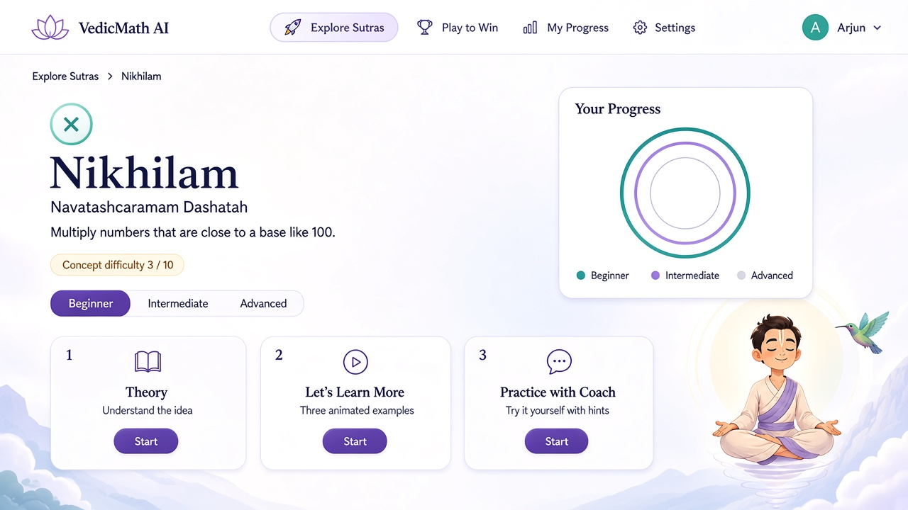
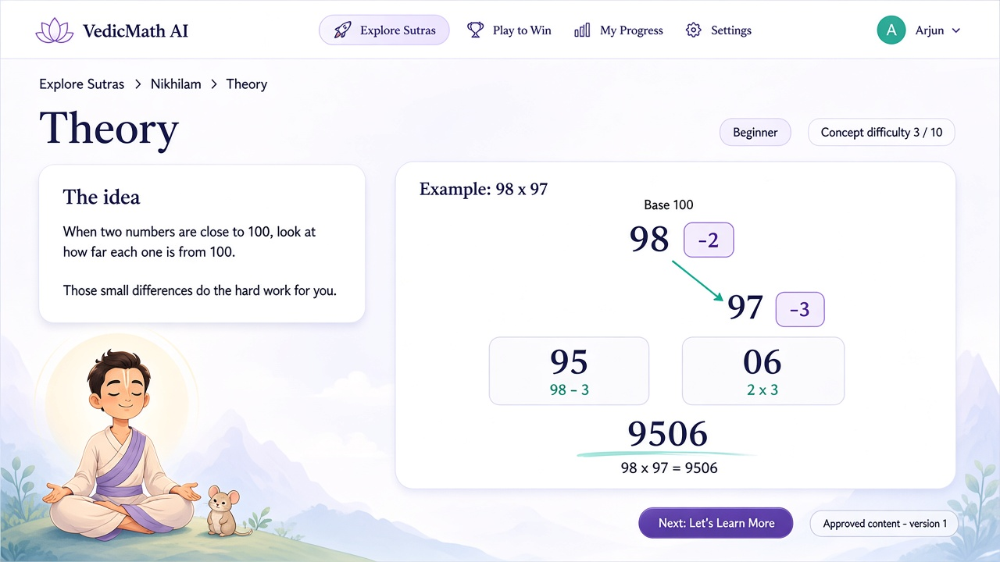
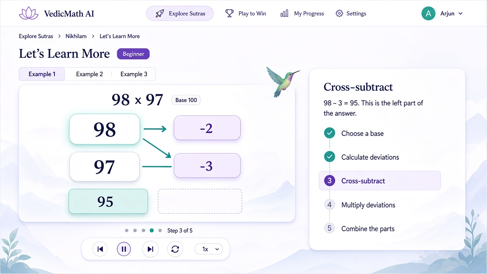
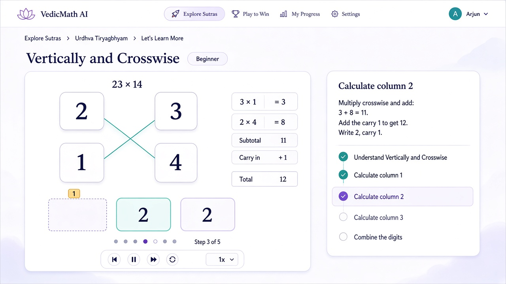
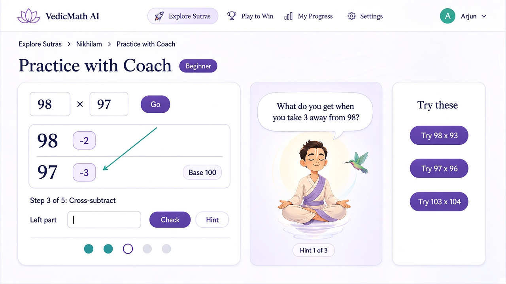
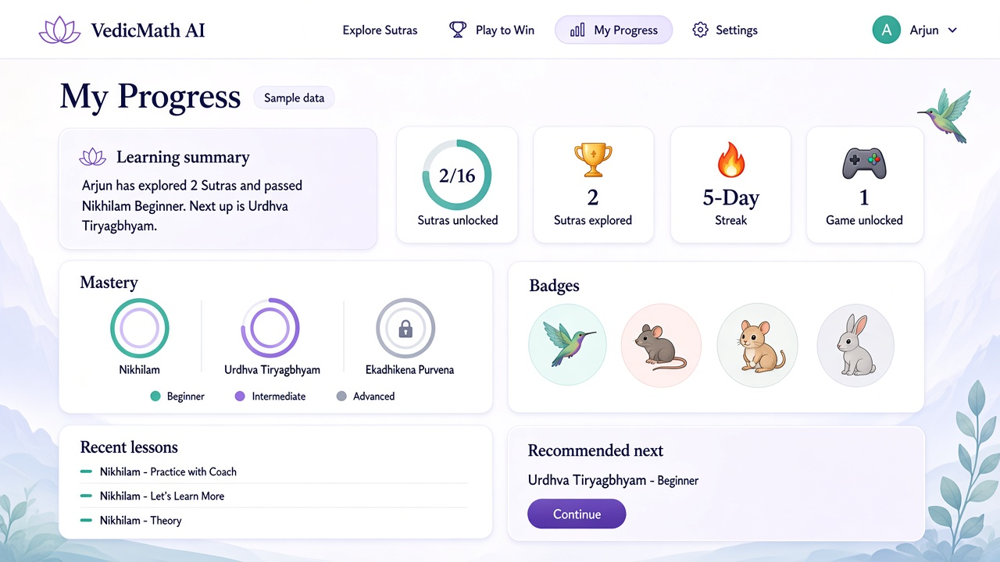
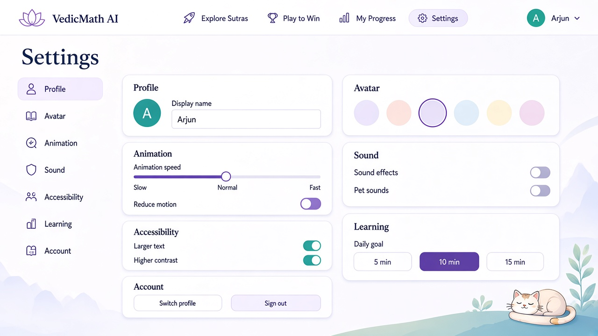
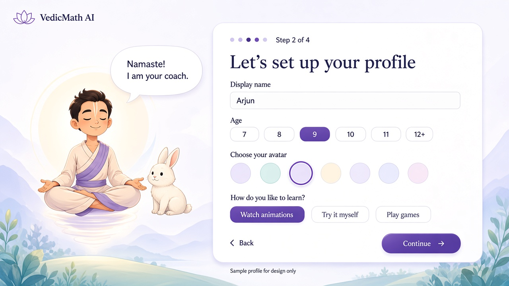

How to use this page: scroll to review each screen. Click any image to open it full size in a new tab.
Screen 01 is your approved reference, shown for comparison. Screens 02 to 12 are drafts made by an image generator in that style. Judge layout and mood; small text and arrow glitches are listed under each screen and will not be built.
01 Landing page and Explore Sutras Approved reference
Your original approved image, unchanged. Its Sutra order differs from the written spec.
02 Explore Sutras, spec order Draft
Nikhilam at the bottom, then Urdhva, then Ekadhikena. Mastery drawn as rings around each node instead of dots. Known flaws: only five of the 16 nodes are shown; the rings are faint.
03 Individual Sutra page (Nikhilam) Draft
Name, description, difficulty rating, level selector, progress rings, and the three sections. The "3 / 10" rating is a placeholder.

04 Theory Draft
Two-sentence idea plus the 98 × 97 example. The wording is a placeholder. Known flaw: the arrow points at 97 rather than at the −3 chip.

05 Let's Learn More, Nikhilam animation Draft
Animation stage, playback controls and step list, paused on step 3 of 5. Known flaws: two extra horizontal arrows; the fourth step dot is highlighted instead of the third.

06 Let's Learn More, Urdhva animation Draft
23 × 14 with crosswise lines, subtotal, carries and written digits. Known flaws: seven step dots instead of five; the current step shows a tick.

07 Practice with Coach Draft
Workspace on the left, coach in the middle, suggested calculations on the right. The hint wording is a placeholder. Known flaw: the arrow starts from empty space rather than from 98.

08 Play to Win Draft
Game hub with one unlocked and two locked games. Known flaw: the Math Detective magnifier shows a meaningless "6/16".
09 My Progress Draft
Summary, stats, mastery rings, badges, recent lessons and next lesson. All numbers are fictional. Known flaw: the third badge is a second rodent instead of a cat.

10 Settings Draft
Profile, avatar, animation, sound, accessibility, learning and account. Known flaw: some toggles are drawn on that should be off.

11 Onboarding Draft
Profile setup with the coach greeting. Known flaws: five step dots beside "Step 2 of 4"; seven avatars instead of eight.

12 Mobile: landing, journey, practice Draft
Three phone screens with a bottom tab bar. Known flaw: the "Explore" tab is active on all three phones.